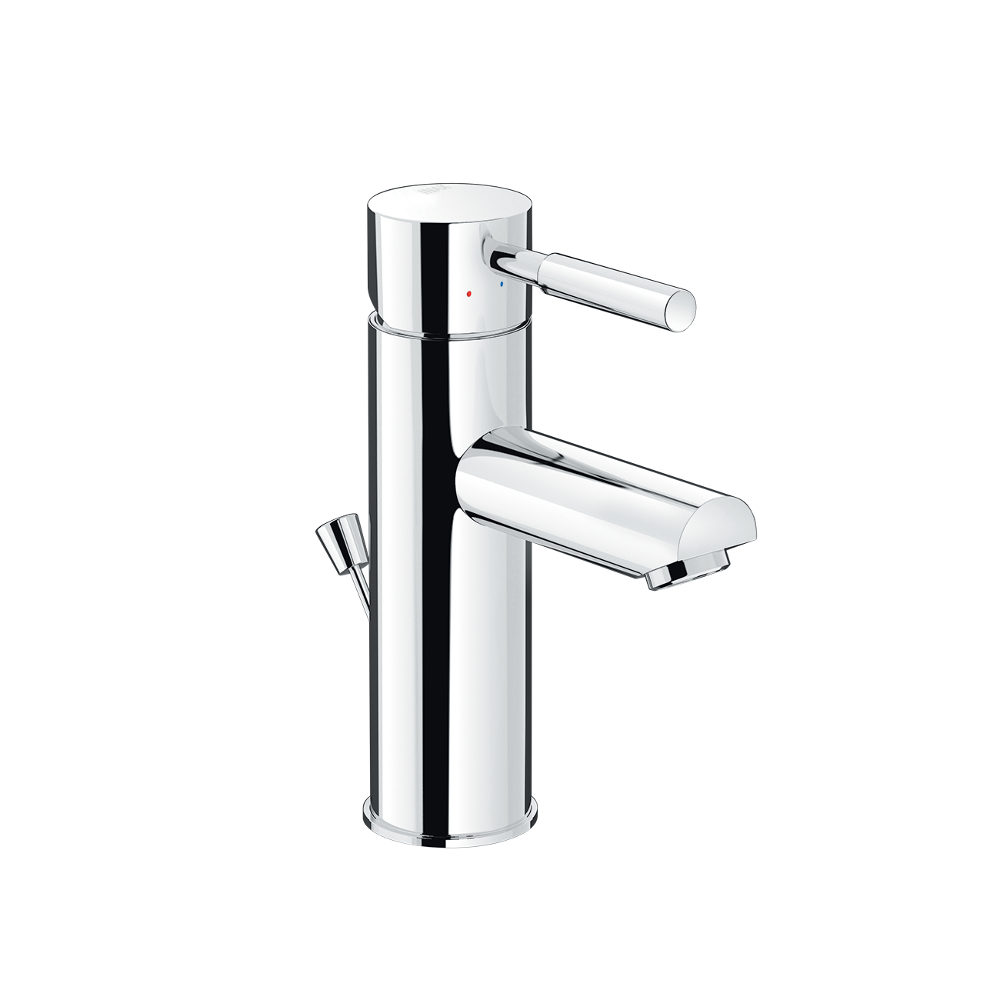
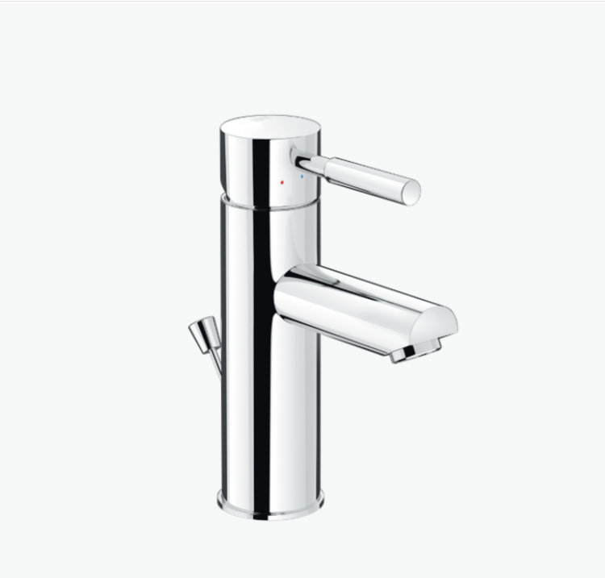
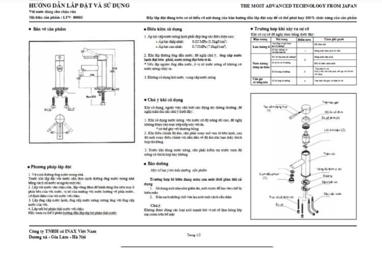

Nếu bạn đang tìm kiếm bộ sen vòi đáp ứng các tiêu chí về độ bền vượt trội, thiết kế đơn giản, tinh tế và khả năng vận hành ổn định, sen vòi đơn LFV-8000S chính là giải pháp lý tưởng. Sản phẩm tập trung vào chất lượng và tính năng sử dụng lâu dài, mang đến tiện nghi và vẻ đẹp thẩm mỹ cho phòng tắm của bạn. Chất liệu cao cấp, tính thẩm mỹ caoToàn bộ thân sen vòi đơn LFV-8000S được bảo vệ bằng lớp mạ Crom-Niken cao cấp, có khả năng chống ăn mòn và chống oxy hóa hiệu quả, đặc biệt trong môi trường ẩm ướt như phòng tắm. Lớp mạ này mang đến độ sáng bóng và giữ cho sản phẩm luôn mới, dễ dàng lau chùi, vệ sinh.Bên cạnh đó, LFV-8000S còn sở hữu van điều khiển bằng sứ chất lượng cao, độ bền vượt trội và có khả năng hoạt động trơn tru. Chính bộ phận này sẽ giúp sen vòi chống rò rỉ nước hiệu quả dưới mọi áp lực,giúp loại bỏ hoàn toàn tình trạng nhỏ giọt - yếu tố gây lãng phí nước trong xã hội hiện nay.Thiết kế sen vòi đơn LFV-8000S đơn giản, tập trung vào hiệu năngLà dòng vòi nước nóng lạnh, LFV-8000S tập trung vào sự tối giản, loại bỏ các chi tiết thừa để mang đến sự tiện lợi, dễ dàng sử dụng. Với phong cách tối giản, sản phẩm phù hợp với nhiều nội thất phòng tắm khác nhau, từ cổ điển đến hiện đại. Ngoài ra, sự đơn giản này cũng giúp việc lắp đặt và bảo trì trở nên thuận tiện hơn.Tay gạt và núm xoay của sen vòi đơn LFV-8000S được thiết kế để điều chỉnh dòng nước nóng - lạnh linh hoạt, giúp quá trình đóng - mở luôn nhẹ nhàng, không bị kẹt hay rít sau thời gian dài sử dụng.Nhìn chung, sen vòi đơn INAX LFV-8000S là minh chứng cho cam kết về chất lượng của thương hiệu INAX. Sản phẩm không chỉ là thiết bị vệ sinh cao cấp, sử dụng cho cả sen tắm và vòi lavabo mà còn là khoản đầu tư bền vững, mang lại sự ổn định và tiện nghi cho không gian phòng tắm của bạn.Mọi thắc mắc hoặc cần hỗ trợ về sản phẩm và bảo hành, vui lòng liên hệ Hotline tư vấn và bảo hành: 18006633.Hướng dẫn lắp đặt sen vòi đơn LFV-8000SXem thêm file hướng dẫn tại đâyThông số kỹ thuậtTên sản phẩmSen vòi đơn LFV-8000SChất liệuMạ Crom-NikenKích thước-Đặc điểm- Van điều khiển bằng sứ có độ bền cao, chống rò rỉ nướcThương hiệuINAXKhác- Hotline tư vấn và bảo hành: 18006633
Sen vòi đơn LFV-8000S
Vòi chậu thương hiệu INAX.
Đã cập nhật danh sách yêu thích.
DANH MỤC: Vòi chậu
MÃ SẢN PHẨM: LFV-8000S
DEPTH: mm
HEIGHT: mm
WIDTH: mm
Nếu bạn đang tìm kiếm bộ sen vòi đáp ứng các tiêu chí về độ bền vượt trội, thiết kế đơn giản, tinh tế và khả năng vận hành ổn định, sen vòi đơn LFV-8000S chính là giải pháp lý tưởng. Sản phẩm tập trung vào chất lượng và tính năng sử dụng lâu dài, mang đến tiện nghi và vẻ đẹp thẩm mỹ cho phòng tắm của bạn. Chất liệu cao cấp, tính thẩm mỹ caoToàn bộ thân sen vòi đơn LFV-8000S được bảo vệ bằng lớp mạ Crom-Niken cao cấp, có khả năng chống ăn mòn và chống oxy hóa hiệu quả, đặc biệt trong môi trường ẩm ướt như phòng tắm. Lớp mạ này mang đến độ sáng bóng và giữ cho sản phẩm luôn mới, dễ dàng lau chùi, vệ sinh.Bên cạnh đó, LFV-8000S còn sở hữu van điều khiển bằng sứ chất lượng cao, độ bền vượt trội và có khả năng hoạt động trơn tru. Chính bộ phận này sẽ giúp sen vòi chống rò rỉ nước hiệu quả dưới mọi áp lực,giúp loại bỏ hoàn toàn tình trạng nhỏ giọt - yếu tố gây lãng phí nước trong xã hội hiện nay.Thiết kế sen vòi đơn LFV-8000S đơn giản, tập trung vào hiệu năngLà dòng vòi nước nóng lạnh, LFV-8000S tập trung vào sự tối giản, loại bỏ các chi tiết thừa để mang đến sự tiện lợi, dễ dàng sử dụng. Với phong cách tối giản, sản phẩm phù hợp với nhiều nội thất phòng tắm khác nhau, từ cổ điển đến hiện đại. Ngoài ra, sự đơn giản này cũng giúp việc lắp đặt và bảo trì trở nên thuận tiện hơn.Tay gạt và núm xoay của sen vòi đơn LFV-8000S được thiết kế để điều chỉnh dòng nước nóng - lạnh linh hoạt, giúp quá trình đóng - mở luôn nhẹ nhàng, không bị kẹt hay rít sau thời gian dài sử dụng.Nhìn chung, sen vòi đơn INAX LFV-8000S là minh chứng cho cam kết về chất lượng của thương hiệu INAX. Sản phẩm không chỉ là thiết bị vệ sinh cao cấp, sử dụng cho cả sen tắm và vòi lavabo mà còn là khoản đầu tư bền vững, mang lại sự ổn định và tiện nghi cho không gian phòng tắm của bạn.Mọi thắc mắc hoặc cần hỗ trợ về sản phẩm và bảo hành, vui lòng liên hệ Hotline tư vấn và bảo hành: 18006633.Hướng dẫn lắp đặt sen vòi đơn LFV-8000SXem thêm file hướng dẫn tại đâyThông số kỹ thuậtTên sản phẩmSen vòi đơn LFV-8000SChất liệuMạ Crom-NikenKích thước-Đặc điểm- Van điều khiển bằng sứ có độ bền cao, chống rò rỉ nướcThương hiệuINAXKhác- Hotline tư vấn và bảo hành: 18006633
DANH MỤC: Vòi chậu
MÃ SẢN PHẨM: LFV-8000S
DEPTH: mm
HEIGHT: mm
WIDTH: mm